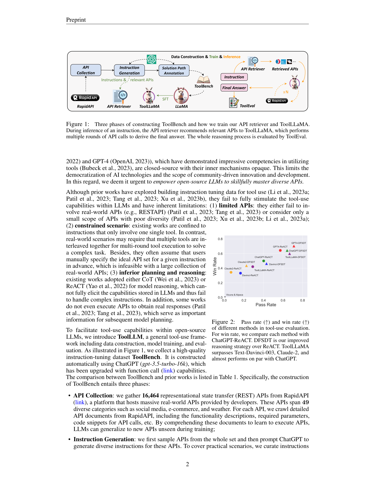
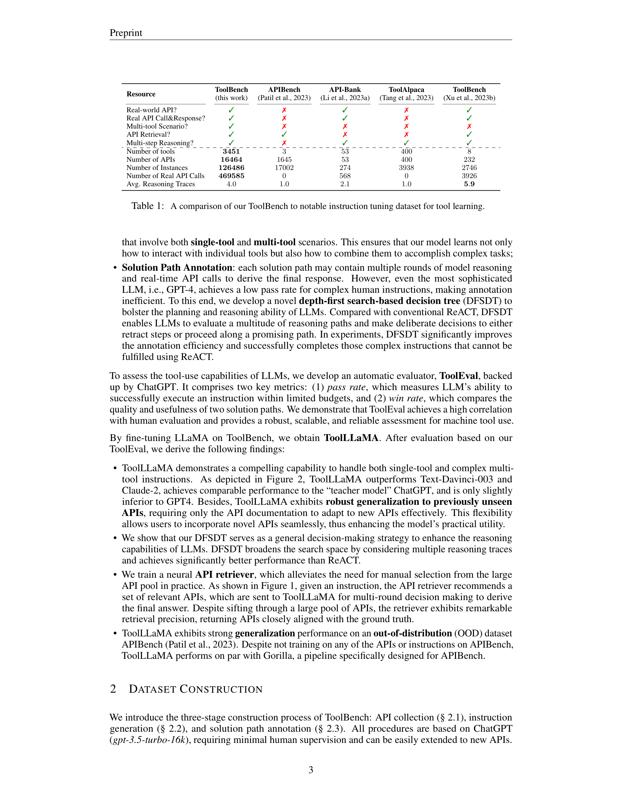
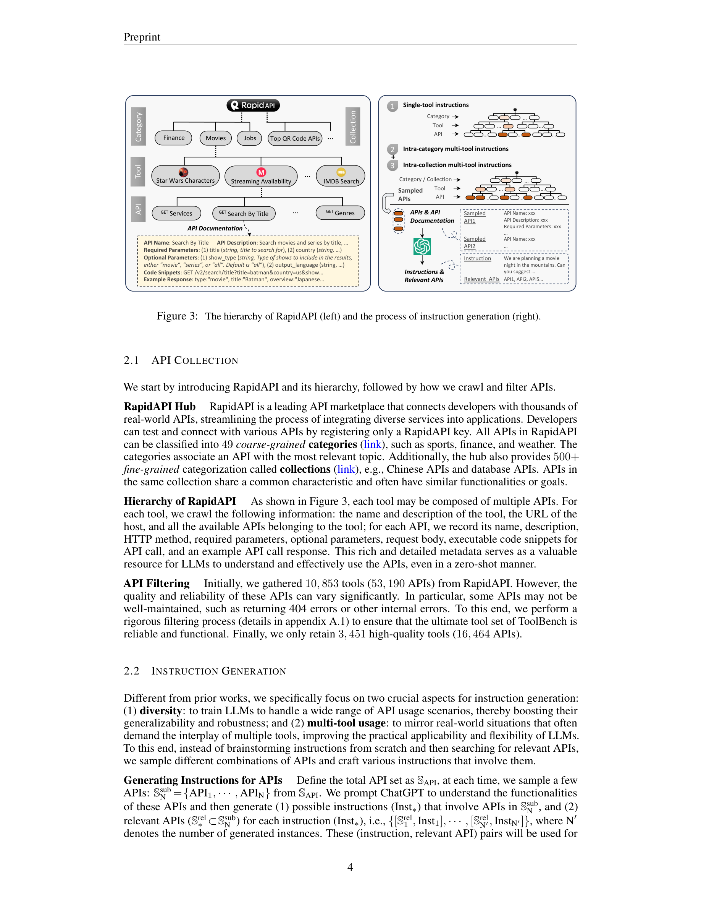
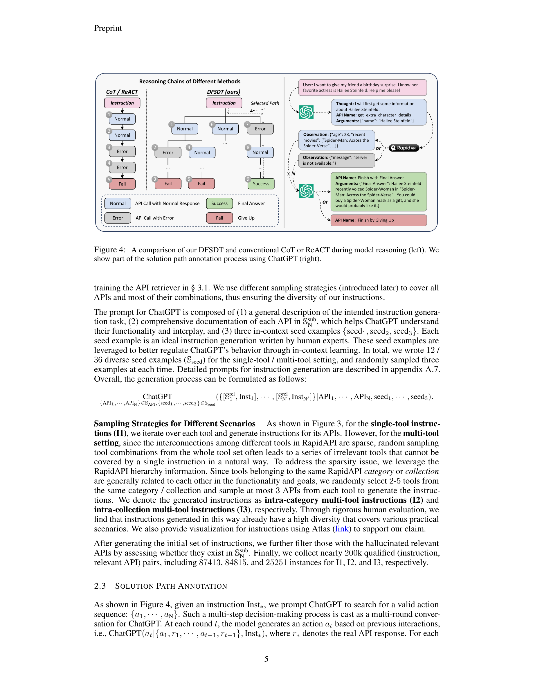

Figure 1
오픈소스 LLM(예: LLaMA)이 외부 API 도구를 활용하는 능력에서 폐쇄형 모델(ChatGPT, GPT-4)에 크게 뒤처지는 문제를 해결하기 위한 범용 도구 사용 프레임워크다. RapidAPI Hub에서 수집한 16,464개의 실제 REST API를 기반으로, 데이터 구축(ToolBench), 모델 학습(ToolLLaMA), 자동 평가(ToolEval)를 아우르는 종합적인 파이프라인을 제시한다. 핵심은 ChatGPT를 활용한 자동 데이터 구축과, 깊이 우선 탐색 기반 의사결정 트리(DFSDT)를 통한 추론 능력 강화에 있다.

Figure 2

Figure 3

Figure 4
기존 ReACT의 두 가지 한계를 극복한다: - 오류 전파 방지: 잘못된 행동이 연쇄적으로 전파되는 것을 방지하기 위해, 탐색 중 되돌아가기(backtracking) 허용 - 탐색 공간 확장: 단일 경로가 아닌 여러 추론 경로를 동시에 평가하여, 복잡한 지시문도 해결 가능 - pre-order traversal 변형을 사용하여 비용 효율성도 확보 (단순 지시문에서는 ReACT로 퇴화)
ToolLLM은 오픈소스 LLM의 도구 사용 능력을 체계적으로 향상시킨 선구적 연구다. 16,000+ 실제 API를 아우르는 ToolBench 데이터셋, DFSDT를 통한 추론 능력 강화, ToolEval을 통한 자동 평가라는 세 축이 유기적으로 결합되어 있다. 특히 DFSDT가 ReACT 대비 pass rate를 거의 두 배로 끌어올린 점은 인상적이며, 오픈소스 모델이 폐쇄형 모델에 근접할 수 있음을 실증적으로 보여주었다. 다만 ChatGPT에 대한 의존성과 API의 시간적 변동성은 근본적 한계로 남아 있으며, 실제 프로덕션 환경에서의 검증이 필요하다. 이후 등장한 function calling, tool use 관련 연구들의 토대가 된 중요한 기여다.